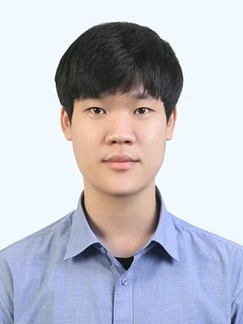

I am a Postdoctoral Researcher at the Information & Electronics Research Institute, KAIST, supervised by Junmo Kim. I am also actively involved in the InnoCORE AI Meta-Scientist Research Group, advised by Tae-Kyun Kim. I received my B.S. and Ph.D. degrees in Electrical Engineering from KAIST in 2021 and 2026, respectively.
My research interests lie in the broad fields of deep learning, specifically focusing on Generative Models, 3D/4D Computer Vision, AI Safety, Multimodal LLMs, and Agentic AI.
Email / CV / GitHub / LinkedIn / GoogleScholar
Contact: hangj0820 [at] kaist.ac.kr

|
Template adapted from Jiwan Hur, Jaehyun Choi, Siwei Zhang, Qianli Ma, and Jon Barron. |